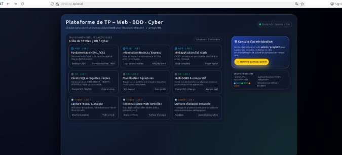

Concevoir un projet de réseau informatique d'entreprise en intégrant haute disponibilité, QoS et sécurité.
Niveau 3- Ce que j'ai fait
- Conception en binôme, dans la SAÉ 5.01 (note 19/20), d'une plateforme de TP conteneurisée déployée sur cluster Kubernetes k3s avec Docker, exposée par le reverse proxy Traefik. Neuf environnements isolés (web, BDD, cybersécurité), bureau distant noVNC accessible en HTTPS depuis n'importe quel navigateur, panneau d'administration Flask. Sécurité conçue dès le départ : Pod Security Standards restricted, NetworkPolicy
deny-all, RBAC, utilisateur non-root partout, BasicAuth Traefik et TLS sur 15 IngressRoutes. - Pourquoi
- L'IUT cherchait à uniformiser l'environnement des TP : les étudiants perdaient du temps à installer localement les outils, et certains TP n'étaient pas reproductibles d'un poste à l'autre. La plateforme devait permettre à un enseignant de provisionner un environnement identique pour tous, accessible en HTTPS, avec restauration en un clic. La haute disponibilité applicative et la sécurité par cloisonnement n'étaient pas des options.
- Comment
- Cadrage formalisé avec l'enseignant porteur, choix d'architecture argumentés (k3s pour la légèreté, Traefik pour les middlewares), trois familles d'images Docker. Industrialisation : registry privée, manifests Kubernetes versionnés sous Git, namespaces isolés avec quotas. Documentation technique de 86 pages couvrant architecture, déploiement et maintenance.
- Mes difficultés
- Trois principales. La courbe d'apprentissage de Kubernetes (Service vs Deployment vs StatefulSet vs Ingress vs NetworkPolicy demande du temps). L'exposition WebSocket via Traefik pour noVNC, qui a nécessité d'analyser les en-têtes HTTP et de configurer correctement les middlewares. L'équilibre entre cloisonnement et fonctionnalité sur les NetworkPolicy : trop strictes, elles cassent tout ; trop permissives, elles n'ont plus d'intérêt.
- Ce que j'en ai appris
- Une architecture sécurisée ne se rajoute pas après coup : la sécurité par défaut est un choix d'architecture initiale. La documentation est une compétence technique à part entière, sans laquelle un projet meurt avec ses auteurs. Et l'observabilité (logs, métriques, panneau d'admin) doit se concevoir en parallèle du déploiement, pas après.
- Ce que je ferais autrement
- Mettre en place un GitOps réel (ArgoCD ou Flux) plutôt que des
kubectl applymanuels. Industrialiser la build des images via une CI plutôt que par construction locale. Ajouter un système de quotas par utilisateur dans le panneau d'admin pour empêcher la monopolisation d'environnements.

desktop.tp.local, neuf environnements regroupés en trois colonnes (Web, BDD, Cyber). La séparation visuelle reflète le cloisonnement réseau effectif par namespace Kubernetes.